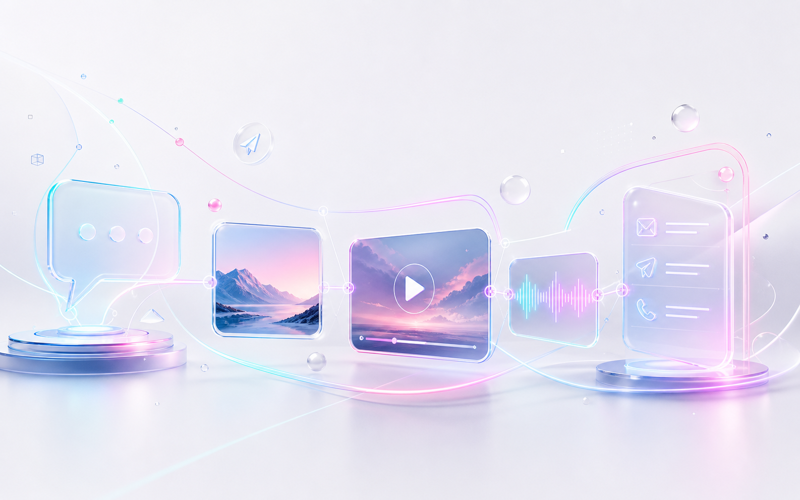

Войдите на сайте
Откройте личный кабинет и подтвердите вход через Telegram. Если удобнее работать в чате, перейдите в t.me/apix_ai_bot.
Старт без трения
Запуск занимает меньше минуты: войдите на сайте через Telegram или откройте бота, получите 15 кредитов и выберите первый сценарий генерации.

Откройте личный кабинет и подтвердите вход через Telegram. Если удобнее работать в чате, перейдите в t.me/apix_ai_bot.
Бот зарегистрирует профиль, покажет баланс и главное меню. В текущей конфигурации новый пользователь получает 15 бонусных кредитов.
На сайте выберите “Изображение”, “Видео” или “Музыка” в форме студии. В боте доступны те же сценарии через кнопки “Фото”, “Видео” и “Песня”.
Опиши задачу коротко и конкретно: объект, стиль, свет, композиция, настроение, формат. Если работаешь по референсу, приложи фото в нужном шаге.
Когда результат пришёл, используй повтор, ремикс, ленту или сохранённую серию. Так быстрее довести идею до нужного уровня, чем каждый раз начинать заново.
Промпт
Хороший промпт не обязан быть сложным. Достаточно указать, что нужно создать, в каком стиле, для какой цели и какие детали важны.
Шаблон: что создать + стиль + детали + формат + настроение
Пример: баннер для Telegram-канала про AI, неоновый стиль, тёмный фон, cyan/pink/mint акценты, современно и технологично.
FAQ
Ответы на частые вопросы о запуске, кредитах, веб-кабинете, истории, промптах и реферальной программе.
Начни с простого описания задачи: “обложка для поста о запуске кофейни, тёплый свет, крупный стакан, стиль premium lifestyle”. Если хочется сильнее, открой AI-ассистента и попроси: “улучши промпт для рекламного product shot”.
Модели отличаются скоростью, качеством, разрешением и типом задачи. Например, быстрый image draft дешевле, чем видео или 4K-вариант. Перед запуском бот показывает стоимость, чтобы не было сюрпризов.
Да. В image-to-image и edit-сценариях бот попросит приложить изображение. Для видео есть image-to-video: загружаешь кадр, описываешь движение, камера и атмосфера собираются моделью.
Сохрани удачную часть и уточни промпт: добавь свет, ракурс, материал, фон, формат кадра и то, чего точно не нужно. Если результат из ленты близок к цели, используй ремикс вместо запуска с нуля.
История общая для сайта и бота. В веб-кабинете есть отдельный раздел для прошлых работ, откуда проще возвращаться к результатам, повторять настройки и собирать серию.
Напиши в поддержку с Telegram ID, способом оплаты и временем платежа. В боте используются идемпотентные транзакции, поэтому саппорт сможет проверить статус без риска двойного начисления.